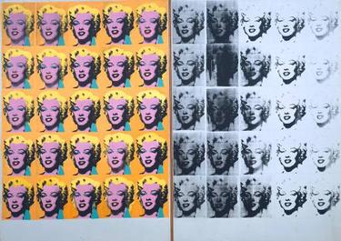

Andy Warhol
American Pop ArtistAndy Warhol was a leading figure in the pop art movement, known for turning everyday images and celebrity portraits into iconic visual art. His work blurred the boundaries between high art and commercial culture.
Masterwork

Marilyn Diptych (1962)
Medium: Silkscreen ink on synthetic polymer paint
Dimensions: 205.44 cm × 289.56 cm
The Marilyn Diptych combines 50 images of Marilyn Monroe, half in color and half in black-and-white, exploring celebrity, repetition, and mortality. Warhol created the work shortly after Monroe’s death, elevating her to mythic status while critiquing media saturation and pop culture.